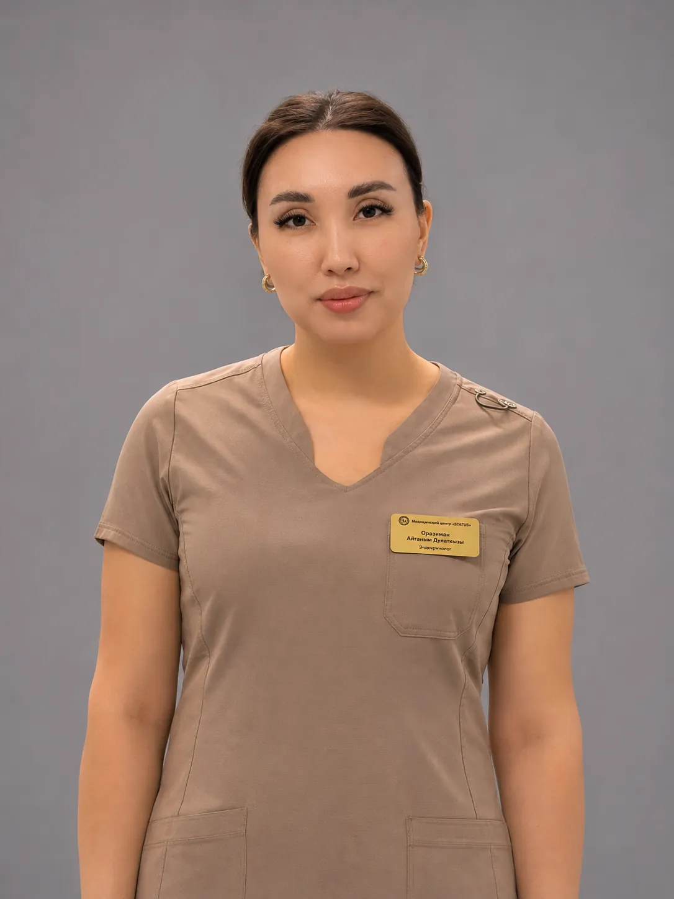
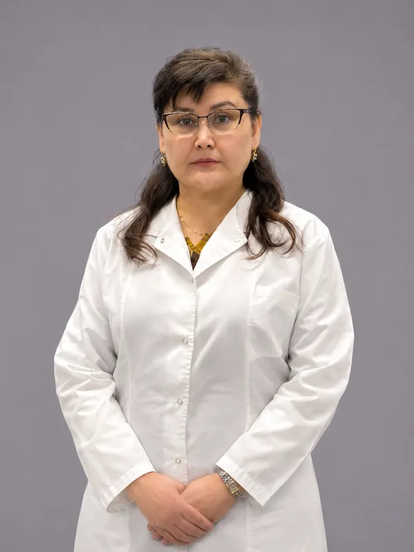

Темп в месяц
Плавное снижение без голодания: организм и кожа успевают перестроиться.

Медицинское снижение веса под контролем эндокринолога: минус 2-4 кг в месяц с сохранением мышечной массы и контролем дефицитов, из-за которых выпадают волосы и теряет упругость кожа лица.
Ведёт программу Оразиман Айғаным Дулатқызы
Вес снижается всегда - важно, за счёт чего. Врач следит, чтобы уходил жир, а организм не терял мышцы, железо и витамины.
Плавное снижение без голодания: организм и кожа успевают перестроиться.
Врач рассчитывает белок и нагрузку, чтобы вес уходил за счёт жира, а не мышечной массы.
Состояние волос, кожи и самочувствие зависят от запаса железа и витаминов - врач держит его под контролем всю программу.
Всё проходит в Status Medical Center: от первого приёма до контрольных замеров. Пациент приходит на приём, сдаёт анализы и проходит УЗИ, врач назначает питание, нагрузку и терапию, а дальше - уколы по схеме и замеры на повторных приёмах.
Записаться на программуЭндокринолог оценивает состояние, историю веса и жалобы, составляет план обследования.
Необходимый минимум: гормоны, обмен веществ, печень, витамины. Забор крови - в центре.
Обследование проходит в этом же здании, результат сразу у врача.
Ферритин, витамин D, B12, фолиевая кислота - врач восполняет дефициты по анализам.
Препарат и дозировку подбирает врач; инъекции по схеме, как правило раз в неделю.
Рекомендации врача по рациону и физической активности, расчёт белков, жиров и углеводов, подбор протеина.
Повторные приёмы и замеры: вес, объёмы, состав и качество тела.
Данные из медицинских карт центра, без имён. Результат индивидуален и зависит от исходного состояния.
Пришла с лишним весом, сухостью во рту, жаждой, выпадением волос, отёками и слабостью. Анализы показали дефицит витамина D и железа, повышенные АЛТ и гликированный гемоглобин.
Вес снижался равномерно, с регулярным контрольным взвешиванием у врача. Объём талии уменьшился со 106 до 94 см.
Снижение веса ведёт эндокринолог, при необходимости к программе подключаются гастроэнтеролог и психолог центра.
Назначает обследование и терапию, контролирует дефициты и ведёт замеры. Специализация: ожирение и избыточный вес, сахарный диабет 1 и 2 типа, заболевания щитовидной железы, нарушения обмена веществ.
Состояние желудочно-кишечного тракта во время снижения веса, ФГДС и УЗИ по показаниям.

Работа с пищевым поведением и поддержка пациента на протяжении программы.
Второй эндокринолог центра - Кенесова Мөлдір Қайратқызы.
Усть-Каменогорск, ул. Кокжал Барака, 19. Будни 08:00-20:00, суббота 08:00-14:00.
При записи на программу - экспресс-чек-ап в подарок
Клиника в Instagram →